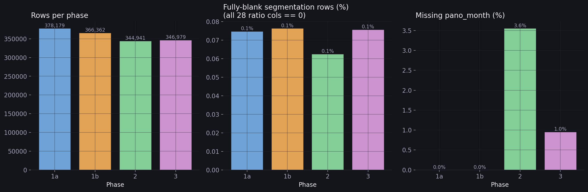
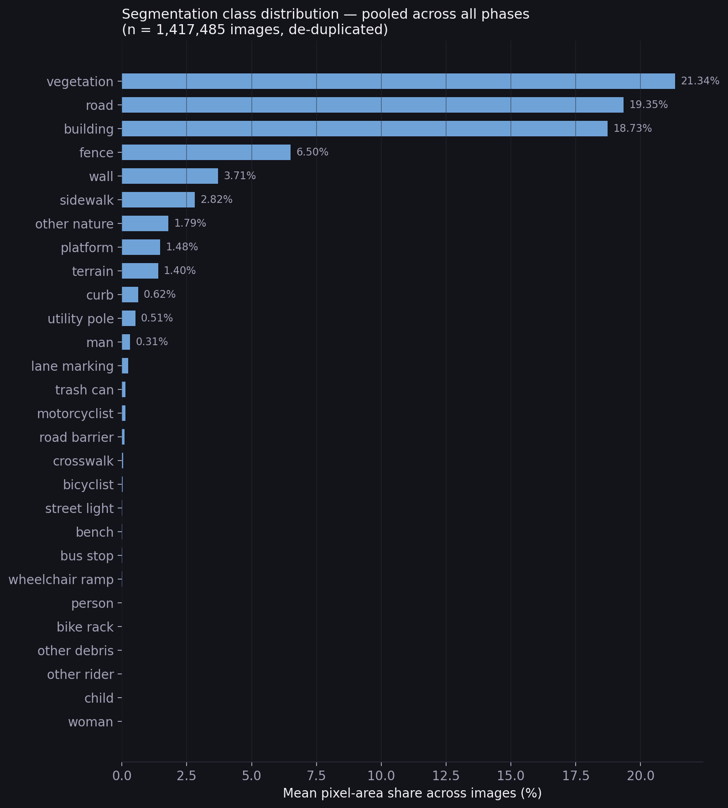
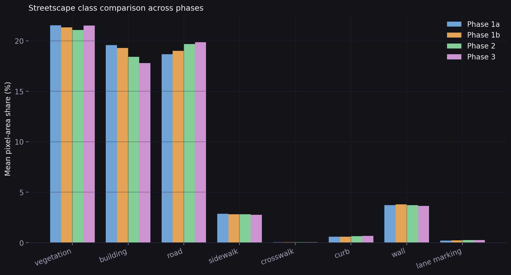
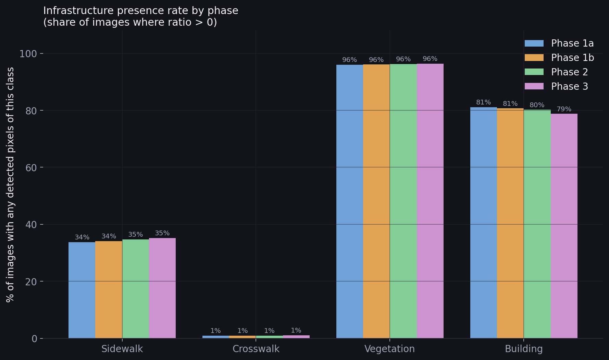
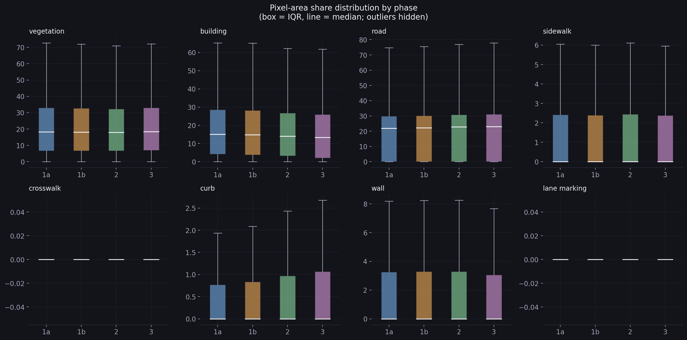
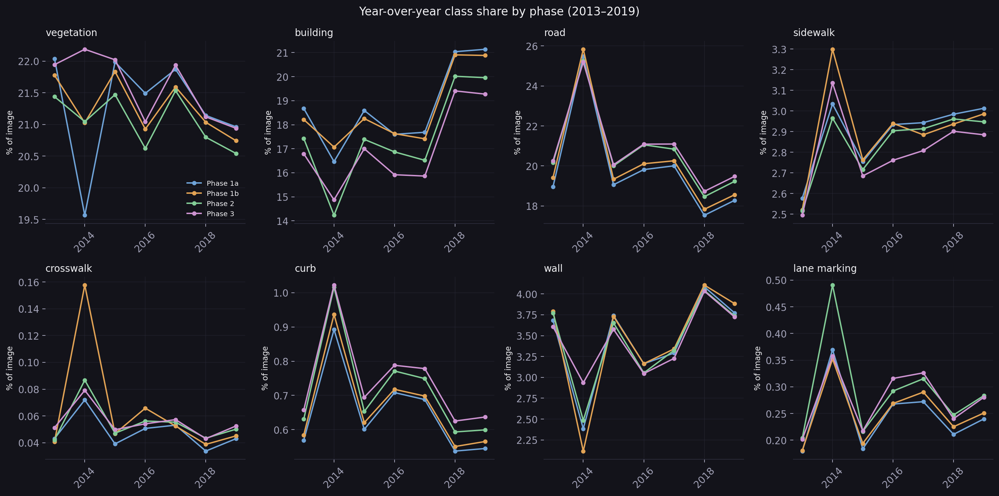
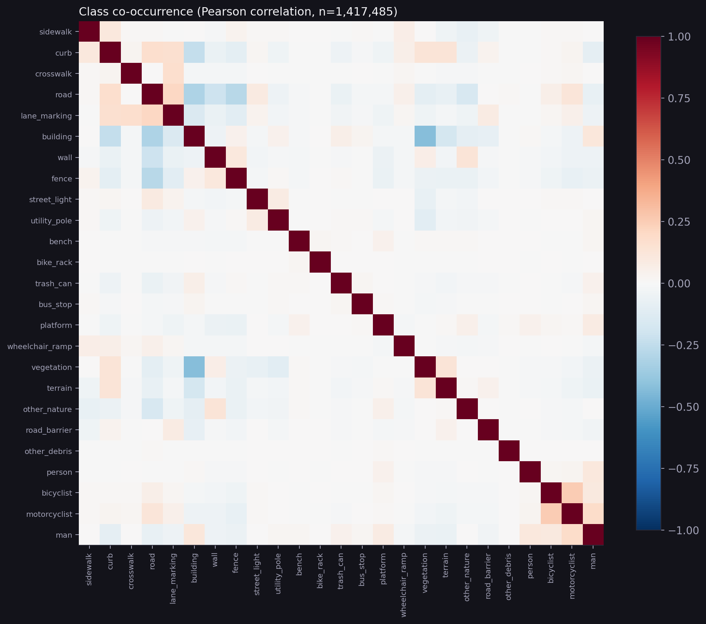

Streetscape
Segmentation
Pixel-level streetscape composition for 1,411,446 unique images across four collection phases: what Jakarta's streets are made of, how consistent that picture is across phases and years, and the checks that keep it trustworthy.
The model and its output
A YOLOv8x-seg model trained on Mapillary Vistas (37 classes) runs on every image at 640 × 640 with confidence 0.20. Mapillary Vistas was chosen for its geographic diversity. No Jakarta-specific fine-tuning was done. For each image the pipeline stores the share of pixels covered by each of 28 retained categories, including sidewalk, curb, crosswalk, road, lane marking, building, wall, fence, street furniture, vegetation and terrain. Only these ratios are written to disk, never the masks, which keeps 1.4M images within Kaggle's storage limits.
Inference runs one phase at a time with checkpoints every few hundred images, so a dropped GPU session resumes where it stopped. The per-phase outputs are then merged and attached to the sampling frame. That gives one row per image with a has_segmentation flag, so unsegmented rows can never be mistaken for empty streets.
Challenge: a silent model fallback
The first Phase 3 run looked wrong next to the other phases: near-zero vegetation and building, an inflated crosswalk share, and 22.8% of rows blank across all 28 classes. The source images were normal. The cause was the model file. The weights path didn't resolve, so the notebook fell back to a generic COCO model without raising an error, and Mapillary class labels were applied to COCO's predictions. Re-running the correct weights on test images gave completely different results, which confirmed the cause.
Phase 3 was re-segmented with the right model, and the fallback was removed altogether. The pipeline now halts unless the weights file exists, has exactly 37 classes, and carries the expected names at known class IDs. A wrong model now stops the run instead of quietly producing plausible numbers.

What Jakarta's streets are made of
Across all images, vegetation, road and building dominate the frame, together about three-fifths of average pixel coverage. Pedestrian infrastructure (sidewalk, curb, crosswalk) is a small share, consistent with a street network built mainly around vehicles and motorbikes.

woman, child and other_rider classes are zero in every image, because those heads were never trained. That doesn't mean "no women were found". People are counted only by the separate pedestrian pipeline.
Consistency across phases
Each phase covers different parts of the city, so a phase that looked very different from the rest would point to a processing problem. They look alike. The mild gradient between them, with road rising and building falling from Phase 1a to Phase 3, is geographic, not technical. On identical images run through two phases, the difference runs the opposite way to the aggregate trend.
Two questions are asked of each class: does it appear in an image at all (presence rate), and how much of the frame does it cover (pixel share)? A class can be present almost everywhere and still cover little of any one frame, so both are reported.



Changes over time
Pooling by capture year, the four phase lines move together within every class, the clearest single sign that Phase 3 now behaves like the rest. Some year-to-year swings are sharp and shared by every phase at once: the 2014 spike in road and curb, and the jump in building share in 2018–19. A change that sudden and that uniform is more likely to reflect how and where imagery was captured that year than real change in the city. These series shouldn't be read as urban change without further checks.

How classes relate to each other
Correlating class shares across images surfaces one strong relationship: building and vegetation are negatively correlated (r ≈ −0.6 to −0.7). More built-up frames show less greenery. Most other pairs sit close to zero.

Segmentation pipeline, merge and figures by Rashmi A. Singh. The study uses these features to describe the visible street environment, for example sidewalks, enclosure and greenery.